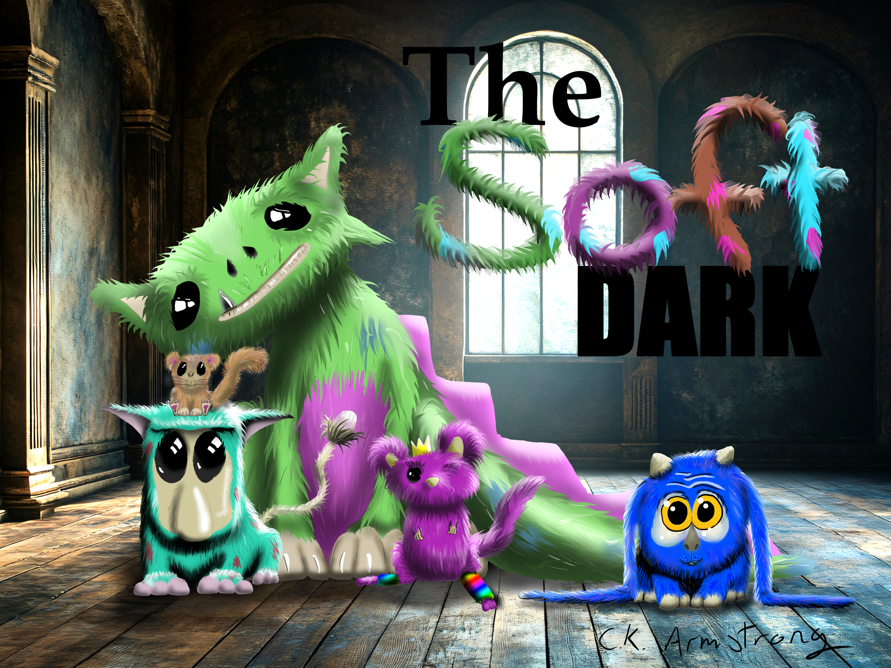
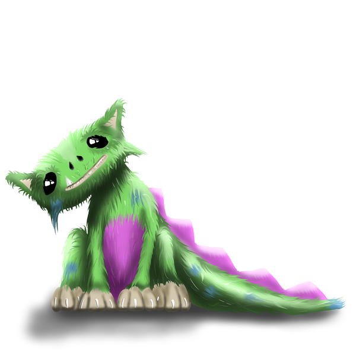
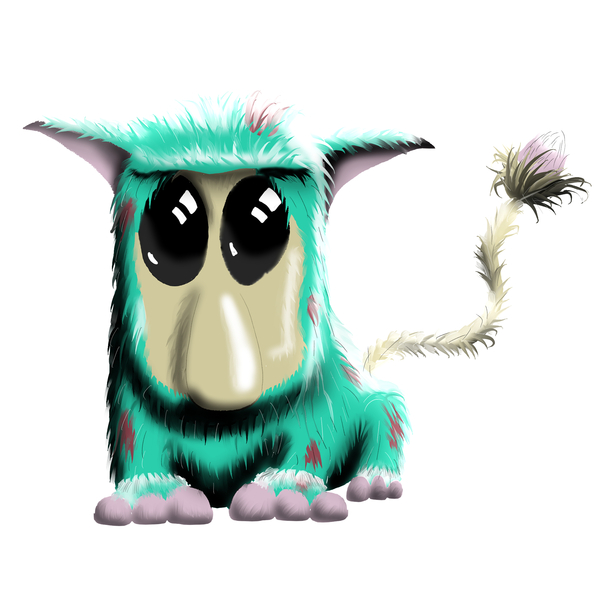
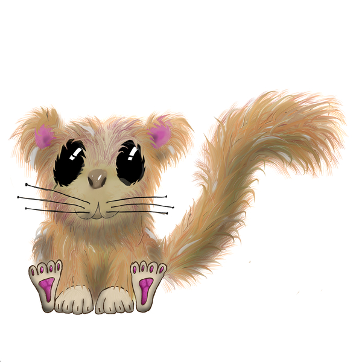
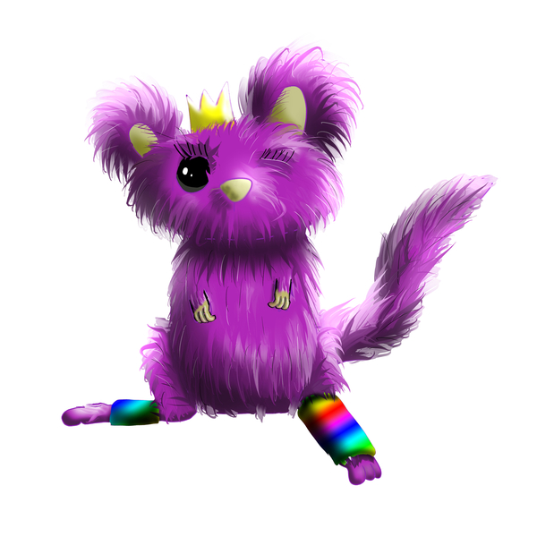
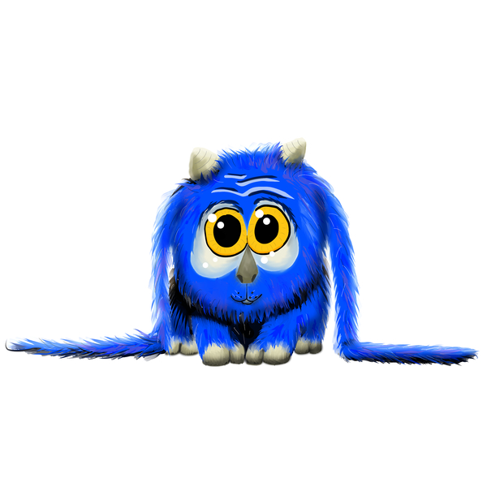

The Soft Dark

The Soft Dark is a place that's soft... and dark. It's home to a host of creatures that are ferociously timid. And soft, oh so soft.
Five creatures from the Soft Dark wake up in gardens and alleys across the globe. They have no memory of the shift. Five children find them. They must hide a tiger-sized, moss-green fluffball in the pantry before their parents walk in. The creatures feel a pull toward each other. The kids have to bridge the gap.
Meet the Tufts

Delilah
Tiger-sized, green, fuzzy, pink belly, and a fin-ridged tail. She loves scratches on her shoulder blades but has a deep-seated hatred for plant pots.

Flubo
Loves anything high pitched. You'll often find him in windy places, sitting near things that whistle with the gusts. He hates picture frames—not the pictures, just the frames.

Shim
Tiny and peculiar. He loves sleeping with his head against a wall, though he doesn't know why. He strongly dislikes the word "hate."

Hamish
Wears a crown but is not in charge. He loves to jump, but never too high—he has a secret fear of heights.

Louis
Often found perched on his favorite chair. He has a quiet dignity and a watchful eye, always observing the world around him with curiosity.
Adopt a Specimen
Custom Specimen
Submit a photo and I will adapt it into a custom "Tuft" in the Soft Dark style. You pick the personality; I'll ink the creature.
Foldable Field Guide
The official Field Guide to the Tufts. A foldable zine containing lore, sketches, and survival tips for the ferociously timid.
Status
Currently in development. The specimens are gathering.
Transparency Ratings
Rated per component using the C-AITS scale.
 Story / Text
Level 0 — The Soul
Illustrations
Level 0 — The Soul
Story / Text
Level 0 — The Soul
Illustrations
Level 0 — The Soul